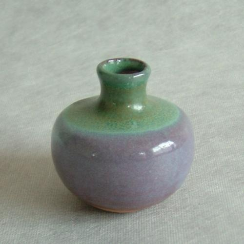
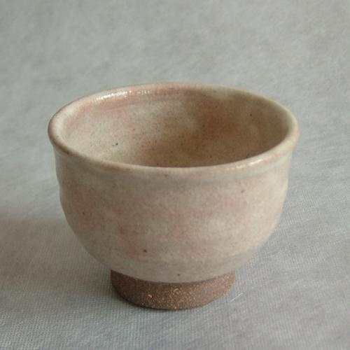
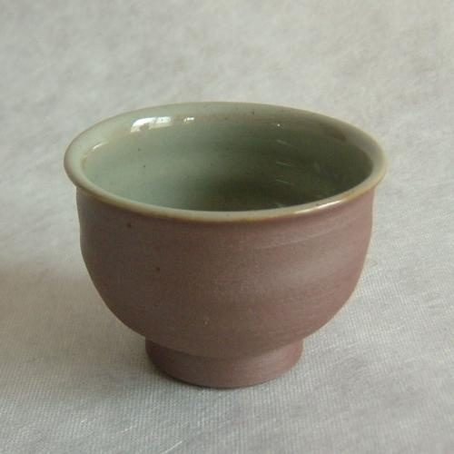
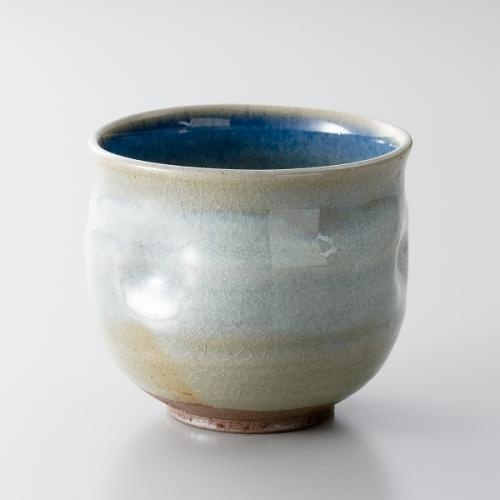

otonarisan
越前焼/Etizen
越前焼は福井県丹生郡越前町の主に宮崎地区・織田地区で焼かれる炻器です
鉄分の多い土を使用し、肌色は黒灰色から赤褐色まで変化し、黄緑色の自然釉が流れ落ちる美しさが特徴です




歴史/History
越前焼の誕生は今から約800年前の平安時代末期に遡ります
元々須恵器を焼いていた地域でしたが、平安時代末期に常滑の技術を導入して焼き締め陶を作り始めました
最初に窯が築かれたのは、現在「越前陶芸村」のある越前町小曽原だったといわれています
壺、甕、すり鉢などの特徴から、初期の越前焼の生産は常滑からこの地まではるばるやって来た陶工の集団が行っていたものと思われます